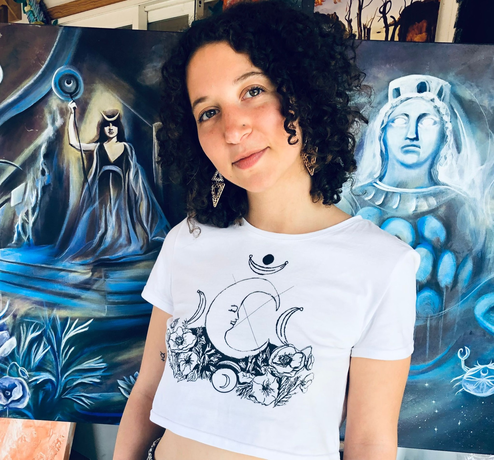
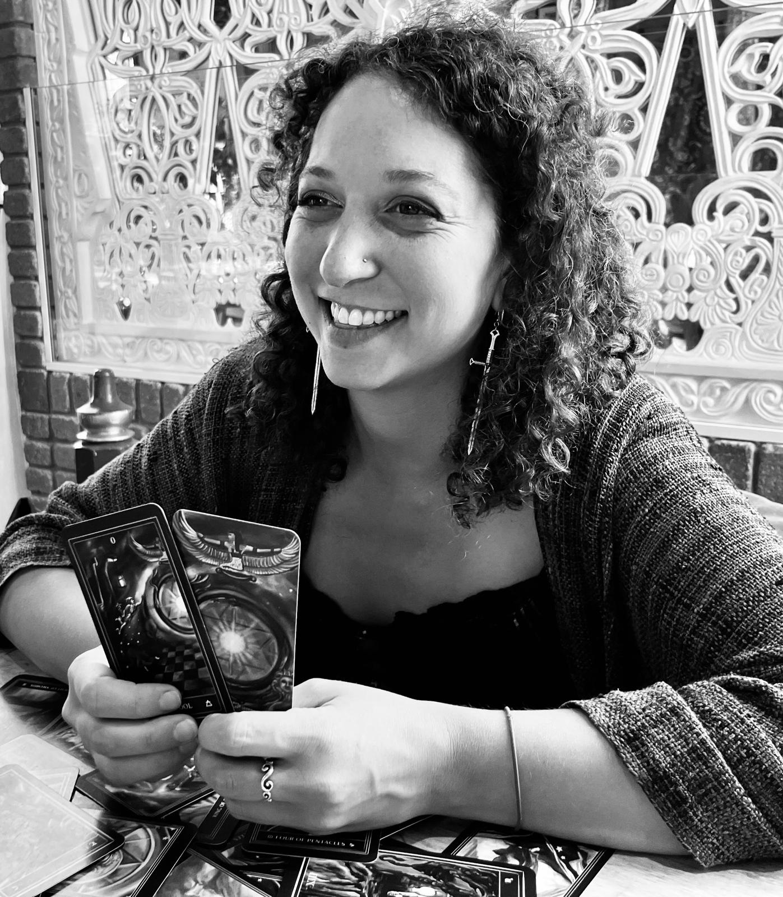

Originally from Hattiesburg, Mississippi — I've made my home in Boulder, Colorado since 2012. I graduated from CU-Boulder with a degree in Studio Arts and Religious Studies, and I've spent the years since working at the meeting place of the two: talismanic oil paintings infused with herbalism, alchemy, ceremonial magic, and electional astrology. When I'm not painting, I'm usually studying one of those.

“…in order to make translucid the most obscure technical secrets, [it] would seem to require the art of magic in addition to the practice of painting itself.” — Salvador Dalí
Through my work, I embark on a journey that explores merging the realms of the magical arts with the traditional medium of oil painting. As in the Latin phrase Ora et Labora — "Work and Pray" — I approach my creative process as a sacred endeavor, infusing intentionality into each brush stroke.
My studio serves as a sanctuary, a sacred space where the fusion of art and magic harmoniously unfolds. It is within this environment that my paintings come to life, embodying the convergence of the physical and the spiritual.
My creative practice is deeply influenced by the realms of magic and astrology, which I incorporate into my painting rituals. By harnessing these mystical practices and the use of electional astrology, I create artistic talismans that carry potent symbolic meanings. Each piece is infused with a profound sense of purpose and devotion.
By embracing the fusion of esoteric arts and traditional oil painting, my work seeks to ignite a sense of wonder, evoking a connection to the hidden realms that lie within us all.

I grew up in Hattiesburg, Mississippi and moved to Boulder, Colorado in 2012 for school. I graduated from CU-Boulder with a double degree in Studio Arts and Religious Studies — and that double-major has been the spine of everything I've done since.
When I'm not making art, I spend most of my time studying and delving into other interests — herbalism, alchemy, spirituality, astrology, and the occult sciences. Combining all of these, I describe my work as narrative art — aiming to tell a story through each painting.
Past interviews and features — podcasts, guest essays, and conversations about the studio practice.
Browse Interviews →Patrons get immediate access to all my work-in-progress content and exclusive entry into my process. If you're an admirer, or someone wanting to dive deeper into your own art practice, this is for you.
I'm building a community of artists, visionaries, seekers, and mystics who want to find a connection between the art and the mystical. Art is magic, and magic is art.
Visit Patreon →I'm available for private and group art lessons in the Front Range area, live painting at events, and a small number of commissions each year.
One-on-one in studio or at your space — Front Range, Colorado. Beginners welcome; we work from where you are.
Themed sessions for small groups — beginner exercises through intuitive painting and planetary color study.
Weddings, festivals, gatherings. I set up an easel, paint the night as it unfolds, and you keep the canvas. Front Range, Colorado.
A small number per year. Portraits, planetary pieces, custom tarot art. We start with a conversation about what you want the work to do.
Painting? Reading? Lessons? Live event? I'd love to hear about it.
Send a Message →